회사개요
전해조 셀, 전해조 밀봉제품, 고무-플라스틱 복합부품에 집중합니다.

공업용 고무 및 불소수지 밀봉, 전해조 셀 및 밀봉제품.
전해조 셀, 전해조 밀봉제품, 고무-플라스틱 복합부품에 집중합니다.
도면 검토부터 안정 생산까지 기술 지원을 제공합니다.
매 생산 로트에 품질체계와 검사기록을 적용합니다.
수요가 높은 제품을 안정적으로 공급합니다.
1991년에 설립된 Metatecno는 약 40,000제곱미터의 부지를 가지고 있으며 중국 클로르알칼리공업협회 회원사입니다. 회사는 경험 있는 관리팀과 강한 기술 대오를 갖추고 있습니다.
Metatecno는 고무 밀봉제품, 이온막 전해조용 전해조 셀, PTFE 호스 조립품을 생산합니다. 여러 이온막 전해조 모델의 기술 보수, 코팅, 막-전극 간격 개조, 프레임 팔라듐 도금, 티탄-팔라듐 합금 전환, 금속 양극 전해조 제조, 염소산염 전해조 제조와 보수를 수행할 수 있습니다.
회사는 완전한 브랜드 관리체계와 품질보증체계를 세웠습니다. 제품 품질은 문서화된 품질 절차에 따라 관리되며 금속 양극 및 전해조 설비는 산업 품질 감독과 검사를 받습니다. Metatecno는 품질 제품, 우수한 봉사, 합리적 가격, 성실 경영 원칙을 지키며 2009년 중국 경쟁력 있는 화학 설비 제조기업 60강에 선정되었습니다.
지원 플랫폼
전해조 셀, 전해조 밀봉제품, 고무-플라스틱 복합부품에 집중합니다.
Metatecno는 Bluestar, Asahi Kasei, Chlorine Engineers, DD350, Uhde, INEOS 전해조 플랫폼에 맞는 밀봉제품과 개조지원을 제공합니다.
자체 개발한 공학방안으로 염소알칼리 기업의 기존 전해설비를 보수하고 고전류밀도, 낮은 막-전극 간격의 이온막 전해조로 개조할 수 있습니다.
지금까지 회사는 여러 염소알칼리 기업에서 년 1,200만 톤을 넘는 이온막 전해조 능력 개선을 지원했습니다.


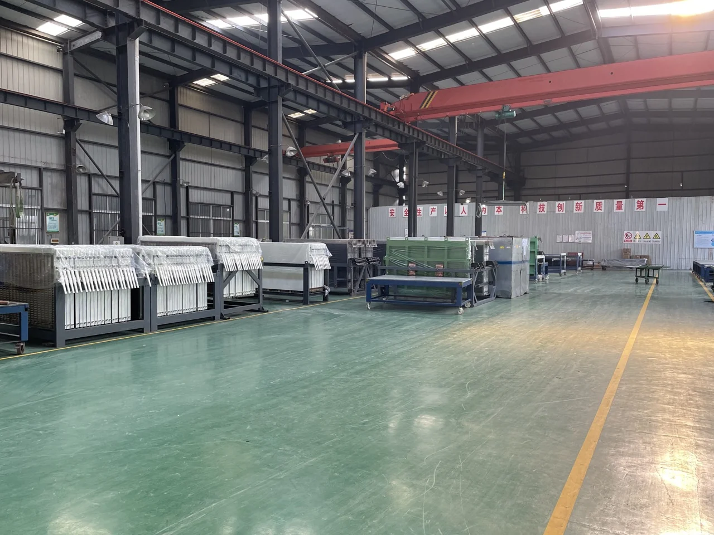
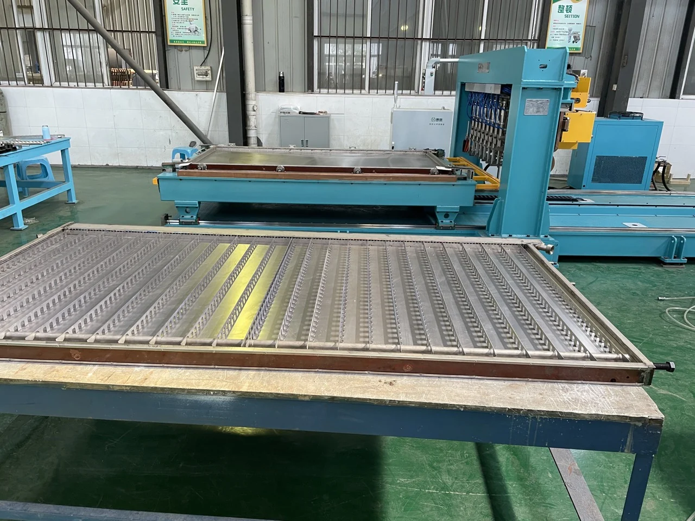

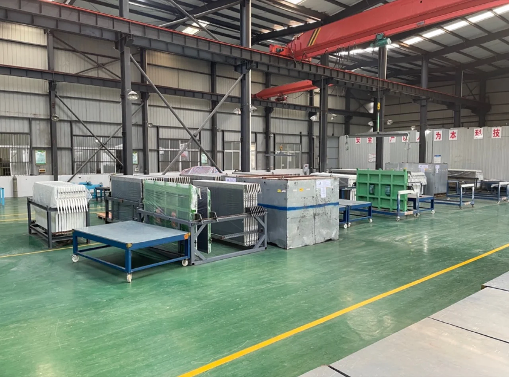
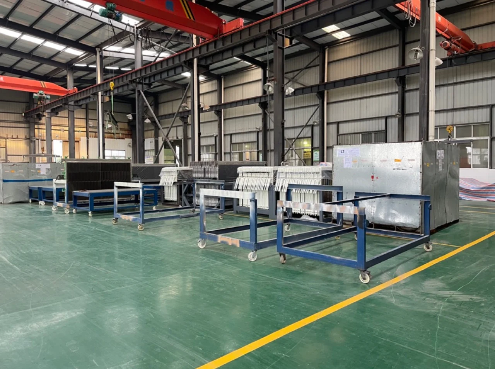
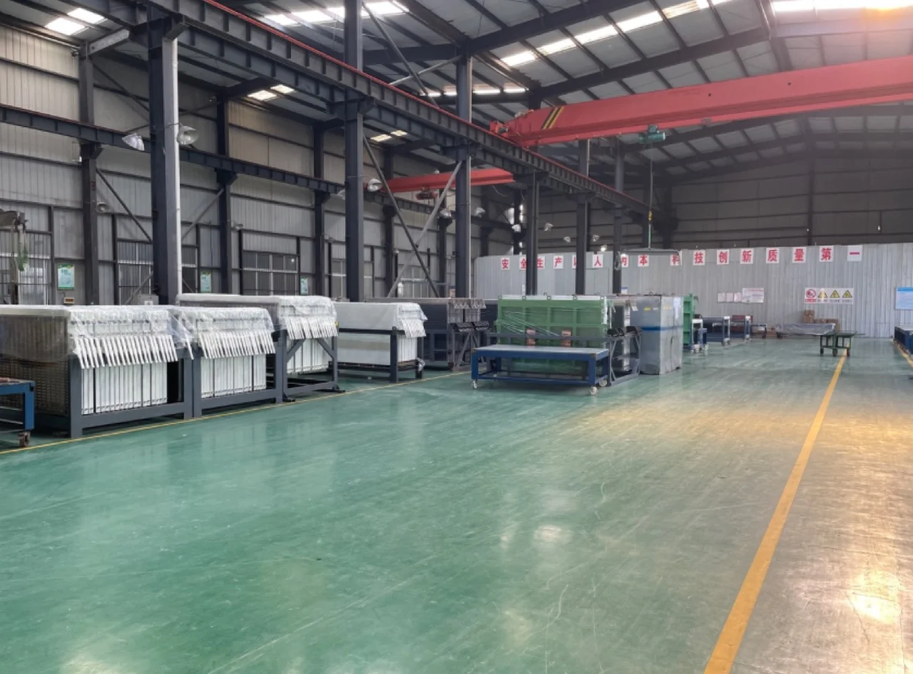
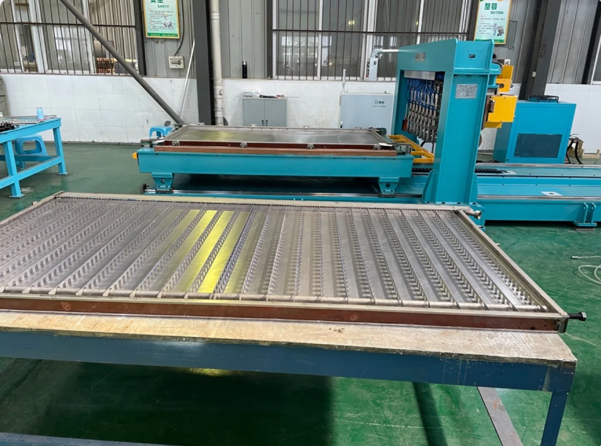
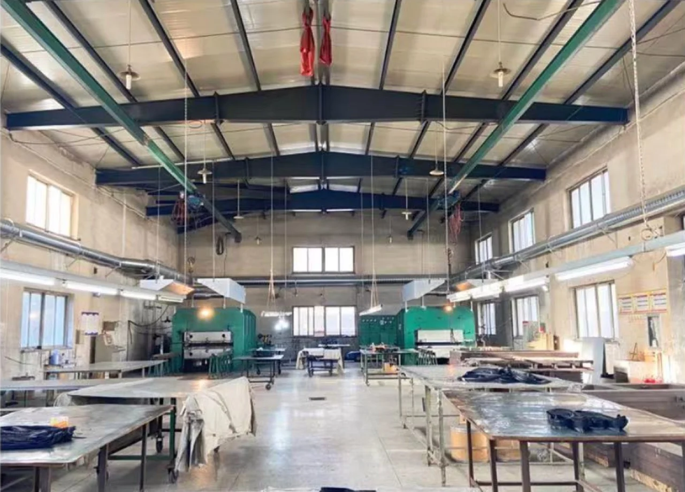
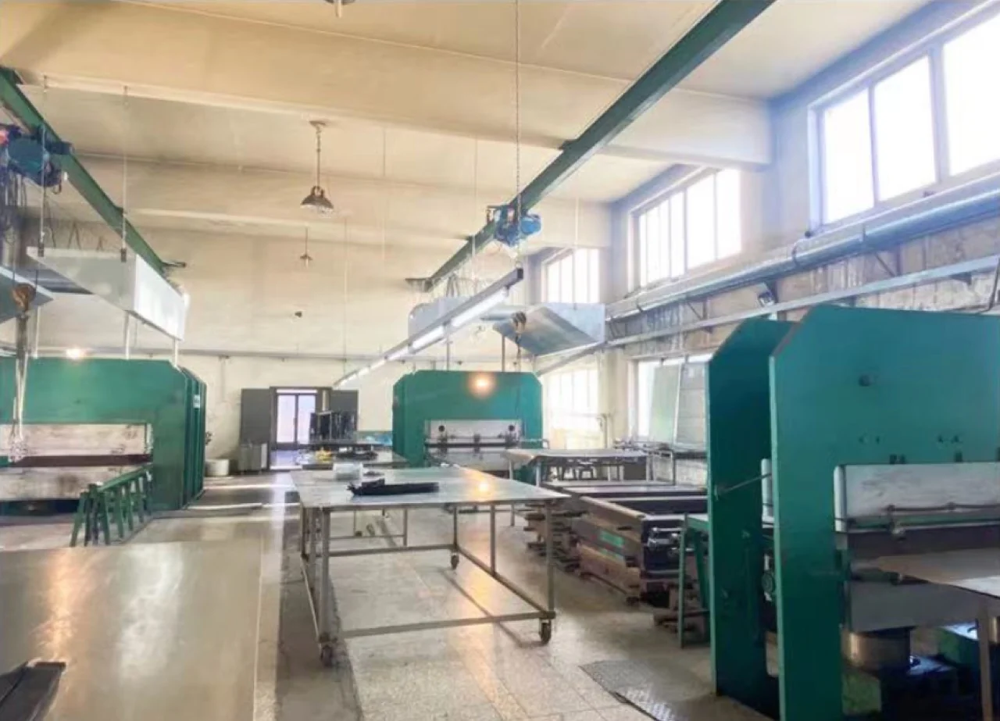
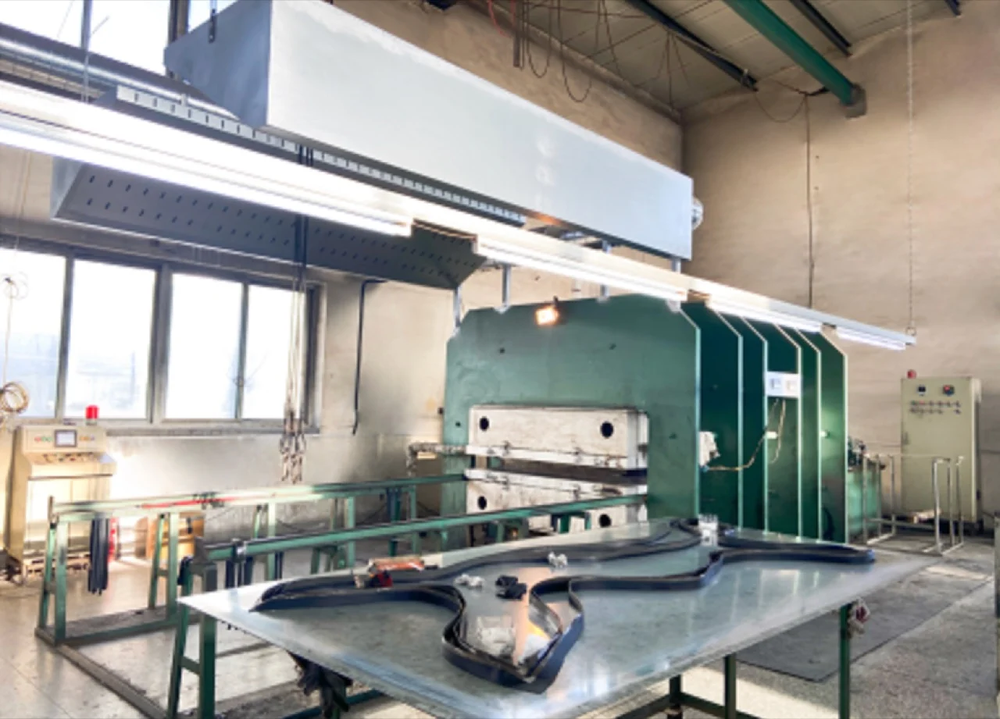
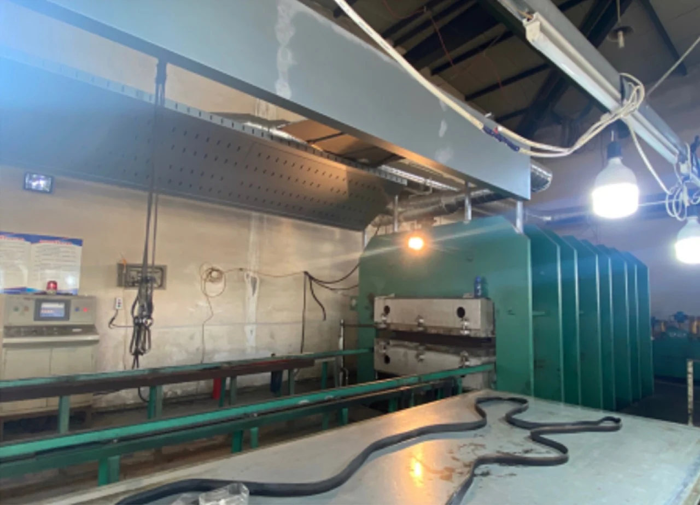
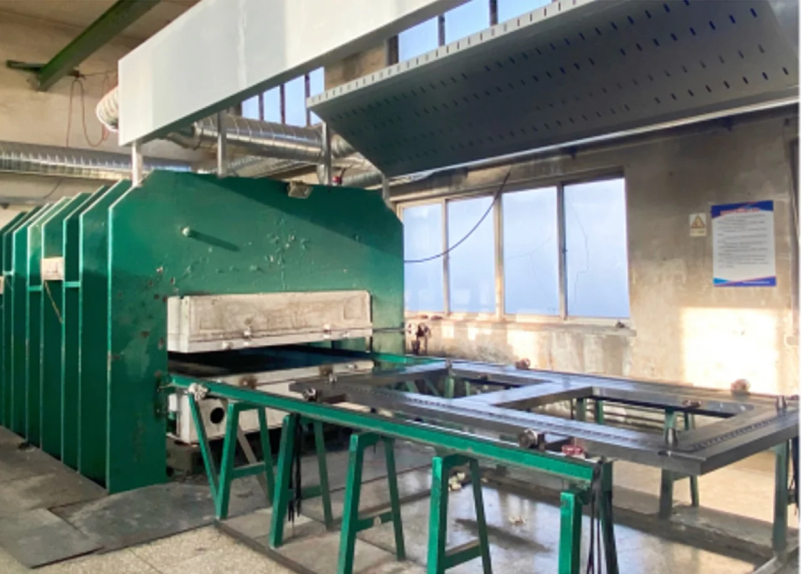
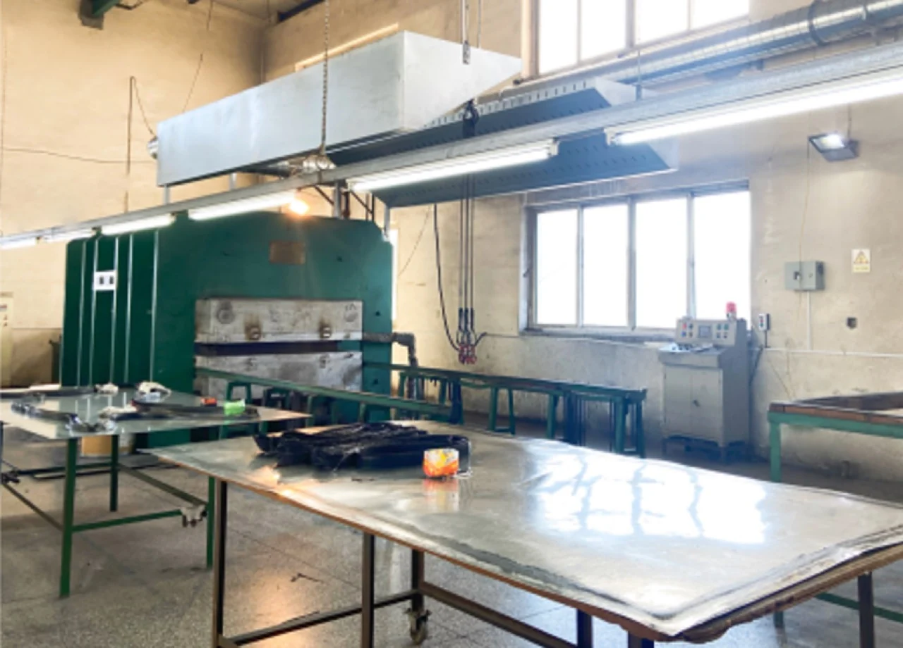
Metatecno는 염소-알칼리 설비용 이온막 전해조를 제작하고 수리, 코팅, 막 간격 개조 및 프레임 개조를 지원합니다.